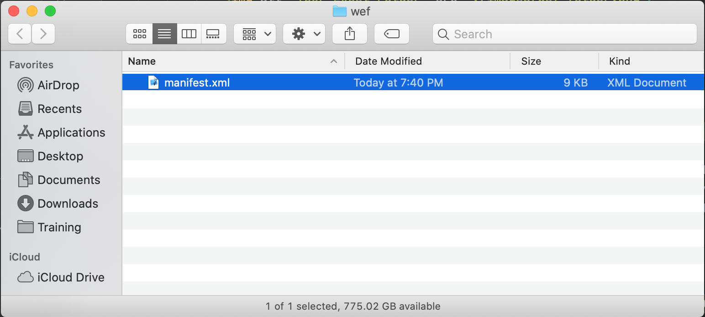
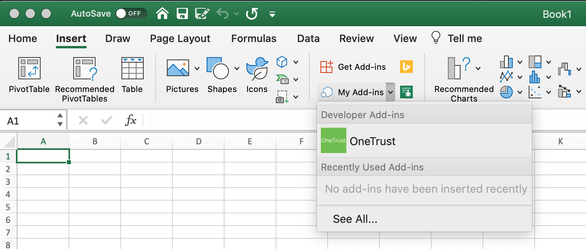

OneTrust MacOs Excel Add-In (Beta)
Installation
This is the installation documentation page for the OneTrust MacOs Excel Add-In.
-
Download the xml file for the Add-In here.
-
Open Terminal and go to the following folder where you'll save your add-in's manifest.xml file. If the wef folder doesn't exist on your computer, create it.
cd /Users/YourUserName/Library/Containers/com.microsoft.Excel/Data/Documents/wef
-
Open the folder in Finder using the command "open ." (including the dot). Copy your add-in's manifest file to this folder.
 -
Open Excel, and then open a Spreadsheet. Restart Excel if it's already running.
-
In Excel, choose Insert > Add-ins > My Add-ins (drop-down menu), and then choose your add-in.
[!IMPORTANT] Sideloaded add-ins will not show up in the My Add-ins dialog box. They are only visible within the drop-down menu (small down-arrow to the right of My Add-ins on the Insert tab). Sideloaded add-ins are listed under the Developer Add-ins heading in this menu.
-
Verify that your add-in is displayed in Excel.

Remove a sideloaded add-in
You can remove a previously sideloaded add-in by clearing the Office cache on your computer. Details on how to clear the cache for each platform and host can be found in the article Clear the Office cache.